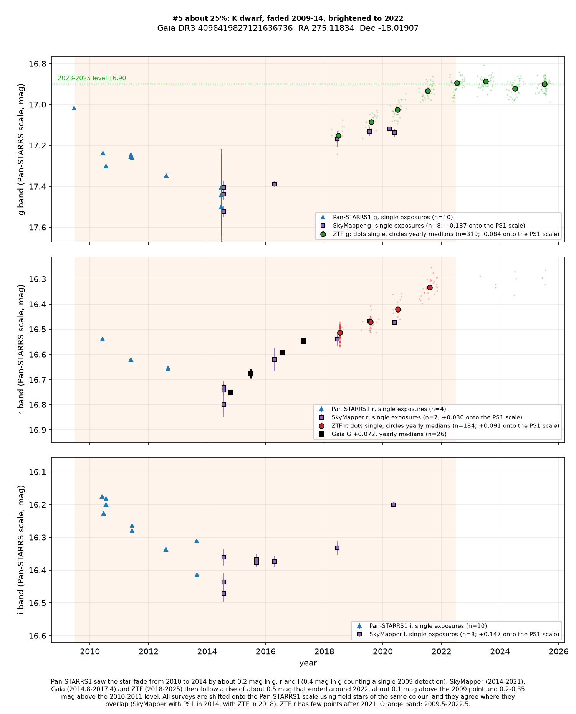
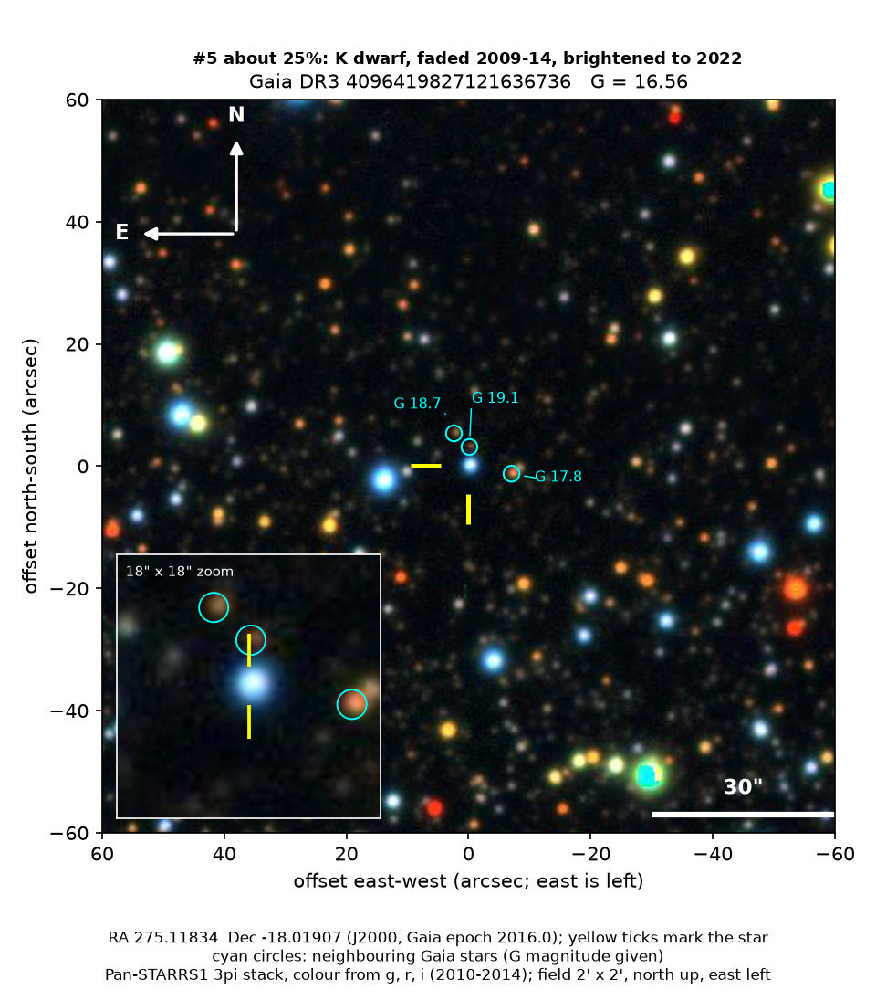

Professor of Mathematics
Paata Ivanisvili
Department of Mathematics, University of California, Irvine

Candidate 5: an orange dwarf near the Omega Nebula that dimmed and recovered
Why this estimate. Four instruments recorded the change, and nearby stars rule out a drift in the surveys themselves. But the star may be young, and long dimmings by dust are a known behaviour of young stars. The fading half of the event rests on Pan-STARRS1 alone, and the star is now brighter than in 2010, so the dip may be only a pause in a slow rise. Slow changes of a few tenths of a magnitude are also common among similar dwarfs, often the spotted, fast-spinning ones. This star shows no rotation, which argues against that, but a rise and fall driven by magnetic activity cannot be ruled out.
How to read the pictures. The finder chart shows a patch of sky two arcminutes across, about a fifteenth of the Moon’s width, with north up and east to the left. The star sits between the two yellow ticks, and the white bar is 30 arcseconds long. On a light curve the vertical axis is magnitude, a brightness scale on which larger numbers mean fainter stars, and it is drawn so that down means fainter. Each survey uses slightly different filters, so each is compared with its own normal level.

What changed. The star is an orange dwarf in Sagittarius, in the plane of the Milky Way, 1.8 degrees from the Omega Nebula, a region where stars are still forming. Gaia estimates its temperature at about 5,050 K. It is about 1.5 kiloparsecs (5,000 light-years) away, with an uncertainty of about 10 per cent, similar to the distance of the nebula, and it lies in a crowded field. Pan-STARRS1 saw it fade by about 0.2 magnitudes in green, red and near-infrared light from 2010 to 2014, or by 0.4 magnitudes in green if a single 2009 measurement is included. SkyMapper from 2014 to 2021, Gaia from late 2014 to mid-2017 and ZTF from 2018 to 2025 then followed a rise of about 0.5 magnitudes, which ended around 2022; the star has been flat since. Where the surveys overlap, they agree. The star is now about 0.1 magnitudes brighter than in the 2009 measurement and 0.2 to 0.35 magnitudes brighter than in 2010 to 2012.
Why it might matter. Ordinary quiet dwarf stars do not dim and recover by half a magnitude over a decade. This star is quiet from night to night: the ZTF scatter equals the measurement errors, and there is no rotation period. Its Gaia spectrum shows no hydrogen emission. The dimming was deeper in blue light than in red, as dust would cause, so a dusty cloud passing in front of the star is one explanation. The pattern can also be read as a slow brightening interrupted by a dip around 2014.
SIMBAD lists nothing known about the star. The variable-star index lists it only because it copies Gaia’s machine classification, and Gaia alerts, published variable-star lists and arXiv show nothing. Gaia’s images show a single star, despite 15 fainter stars within 10 arcseconds; the three nearest are circled on the finder chart. About 30 nearby stars of similar brightness did not fade like this in Pan-STARRS1, and 22 did not change like this in ZTF.
- Star
- Gaia DR3 4096419827121636736, an orange K dwarf
- Location
- RA 275.11834°, Dec −18.01907° (J2000), in Sagittarius, 1.8 degrees from the Omega Nebula
- Distance
- about 1.5 kiloparsecs (5,000 light-years), uncertain by about 10 per cent
- Brightness
- Gaia G = 16.56
- Probability
- This candidate is unconfirmed. The percentage under the title is an estimate of the chance that it is a real, previously unrecorded case of the kind described. The estimate has not been checked by outside experts. See the introduction to all twelve candidates.
- Caveat
- The star may be young, and long dimmings by dust are a known behaviour of young stars with dusty discs. It lies 0.7 magnitudes above the main sequence for its colour, which fits a young star or an unresolved binary, and it is at about the distance of the Omega Nebula’s star-forming region. It shows no hydrogen emission, and the infrared images are too blended to test for warm dust. The fading half rests on Pan-STARRS1 alone: the three 2014 measurements come from one poor night and are each uncertain by 0.2 magnitudes, although SkyMapper confirms that level a month later. The level before 2009 is unknown. No spectrum of the star exists in the public archives that were checked. Gaia’s classifier calls it a spotted active star, with a low score.
